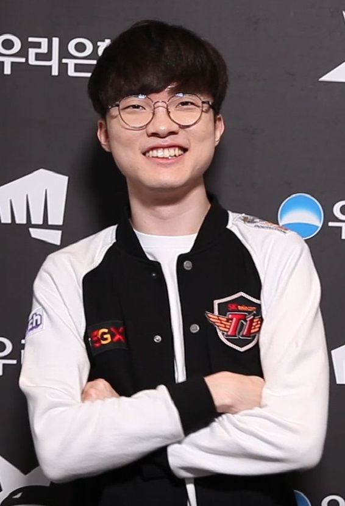

Faker - The Greatest Of All Time
Lee Sang-Hyeok
Lee Sang-Hyeok, most commonly known by his gamer handle "Faker", is a three-time world champion of a popular game known as League of Legends. Nowadays, Faker's name is known by anyone who play League of Legends. Faker serves as both an inspiration to the youth who wants to get into the professional League of Legends scene, and the face of the game itself. He is, without a doubt, the greatest player to have ever played League of Legends. To know more about his life, career, and tournaments he's participated in, click on the corresponding links above.